COCO: A platform for Comparing Continuous Optimizers in a Black-Box Setting¶
See: ArXiv e-prints, arXiv:1603.08785, 2016.COCO is a platform for Comparing Continuous Optimizers in a black-box setting. It aims at automatizing the tedious and repetitive task of benchmarking numerical optimization algorithms to the greatest possible extent. We present the rationals behind the development of the platform as a general proposition for a guideline towards better benchmarking. We detail underlying fundamental concepts of COCO such as its definition of a problem, the idea of instances, the relevance of target values, and runtime as central performance measure. Finally, we give a quick overview of the basic code structure and the available test suites.
Introduction¶
We consider the continuous black-box optimization or search problem to minimize
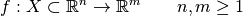
such that for the constraints
we have 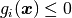 for all 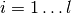.
More specifically, we aim to find, as quickly as possible, one or several solutions in the search space 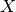 with small value(s) of 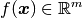 that satisfy all above constraints .
We consider time to be defined as the number of calls to the function  .
.
A continuous optimization algorithm, also known as solver, addresses the
above problem.
Here, we assume that is known, but no prior knowledge about or
is available to the algorithm.
That is, and are considered as a black-box which the algorithm can
query with solutions 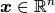 to get the respective values
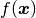 and 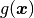.
From these prerequisits, benchmarking optimization algorithms seems to be a rather simple and straightforward task. We run an algorithm on a collection of problems and display the results. However, under closer inspection, benchmarking turns out to be surprisingly tedious, and it appears to be difficult to get results that can be meaningfully interpreted beyond the standard claim that one algorithm is better than another on some problems. [1] Here, we offer a conceptual guideline for benchmarking continuous optimization algorithms which tries to address this challenge and has been implemented within the COCO framework. [2]
The COCO framework provides the practical means for an automatized
benchmarking procedure. Installing COCO (in a shell) and benchmarking an
optimization algorithm, say, the function fmin from scipy.optimize
in Python, becomes as simple as
$ ### get and install the code
$ git clone https://github.com/numbbo/coco.git # get coco
$ cd coco
$ python do.py run-python # install Python experimental module cocoex
$ python do.py install-postprocessing # install post-processing :-)
$ ### (optional) run an example from the shell
$ cp code-experiments/build/python/example_experiment.py .
$ python example_experiment.py # run the current "default" experiment
$ python -m bbob_pproc exdata/... # run the post-processing
#!/usr/bin/env python
"""Python script to benchmark fmin of scipy.optimize"""
import cocoex
try: import cocopp # new (future) name
except ImportError: import bbob_pproc as cocopp # old name
from scipy.optimize import fmin
suite = cocoex.Suite("bbob", "year: 2016", "")
observer = cocoex.Observer("bbob", "result_folder: myoptimizer-on-bbob")
for p in suite: # loop over all problems
observer.observe(p) # prepare logging of necessary data
fmin(p, p.initial_solution) # disp=False would silence fmin output
cocopp.main('exdata/myoptimizer-on-bbob') # invoke data post-processing
Now the file ppdata/ppdata.html can be used to browse the resulting data.
The COCO framework provides
- an interface to several languages in which the benchmarked optimizer can be written, currently C/C++, Java, Matlab/Octave, Python
- several benchmark suites or testbeds, currently all written in C
- data logging facilities via the
Observer- data post-processing in Python and data display facilities in
html- article LaTeX templates
The underlying philosophy of COCO is to provide everything which otherwise most experimenters needed to setup and implement themselves, if they wanted to benchmark an algorithm properly. So far, the framework has been used successfully for benchmarking far over a hundred algorithms by many researchers.
| [1] | One major flaw is that we often get no indication of how much better an algorithm is. That is, the results of benchmarking often provide no indication of relevance; the main output often consists of hundreds of tabulated numbers only interpretable on an ordinal scale [STE1946]. Addressing a point of a common confusion, statistical significance is only a secondary, and by no means a sufficient condition for relevance. |
| [2] | See https://www.github.com/numbbo/coco or https://numbbo.github.io for implementation details. |
| [3] | In order to get even more insightful result on the comparatively
difficult bbob benchmark suite, additionally randomized restarts are advisable.
Example code is given in example_experiment.py which runs
out-of-the-box as a benchmarking Python script. |
Why COCO?¶
Appart from diminishing the burden (time) and the pitfalls, bugs or omissions of the repetitive coding task for many experimenters, our aim is to provide a conceptual guideline for better benchmarking. Our guideline has the following defining features.
Benchmark functions are
- used as black boxes for the algorithm, however they are explicitly known to the scientific community.
- designed to be comprehensible, to allow a meaningful interpretation of performance results.
- difficult to “defeat”, that is, they do not have artificial regularities that can easily be (intentionally or unintentionally) exploited by an algorithm. [4]
- scalable with the input dimension [WHI1996].
There is no predefined budget (number of
-evaluations) for running an
experiment, the experimental procedure is budget-free [HAN2016ex].A single performance measure is used — and thereafter aggregated and displayed in several ways — namely runtime, measured in number of
-evaluations [HAN2016perf]. Runtime has the advantages to- be independent of the computational platform, language, compiler, coding styles, and other specific experimental conditions [5]
- be relevant, meaningful and easily interpretable without expert domain knowledge
- be quantitative on the ratio scale [STE1946] [6]
- assume a wide range of values
- aggregate over a collection of values in a meaningful way
A missing runtime value is considered as possible outcome (see below).
The display is as comprehensible, intuitive and informative as possible. We believe that details matter. Aggregation over dimension is avoided, because dimension is an a priori known parameter that can and should be used for algorithm design or selection decisions. This is possible without significant drawbacks, because all functions are scalable in the dimension.
| [4] | For example, the optimum is not in all-zeros, optima are not placed on a regular grid, most functions are not separable [WHI1996]. The objective to remain comprehensible makes it more challenging to design non-regular functions. Which regularities are common place in real-world optimization problems remains an open question. |
| [5] | Runtimes measured in -evaluations are widely
comparable and designed to stay. The experimental procedure
[HAN2016ex] includes however a timing experiment which records the
internal computational effort of the algorithm in CPU or wall clock time. |
| [6] | As opposed to a ranking of algorithm based on their solution quality achieved after a given budget. |
Terminology¶
We specify a few terms which are used later.
- function
- We talk about an objective function as a parametrized mapping with scalable input space, 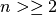, and usually 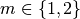. Functions are parametrized such that different instances of the “same” function are available, e.g. translated or shifted versions.
- problem
- We talk about a problem,
coco_problem_t, as a specific function instance on which an optimization algorithm is run. A problem can be evaluated and returns an-value or -vector and, in case,
a -vector.
In the context of performance assessment, a target - or
indicator-value is added to define a problem. - runtime
- We define runtime, or run-length [HOO1998] as the number of
evaluations conducted on a given problem until a prescribed target value is
hit, also referred to as number of function evaluations or -evaluations.
Runtime is our central performance measure.
- suite
- A test- or benchmark-suite is a collection of problems, typically between twenty and a hundred, where the number of objectives is fixed.
Functions, Instances, Problems, and Targets¶
In the COCO framework we consider functions, 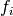, for each suite
distinguished by their identifier 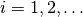 .
Functions are further
parametrized by the (input) dimension,  , and the instance number, , [7]
that is, for a given we have
, and the instance number, , [7]
that is, for a given we have
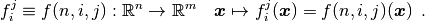
Varying or leads to a variation of the same function
of a given suite.
By fixing and for function , we define an optimization problem
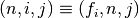 that can be presented to the optimization algorithm. Each problem receives again
an index in the suite, mapping the triple 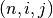 to a single
number.
As the formalization above suggests, the differentiation between function (index) and instance index is of purely semantic nature. This semantics however is important in how we display and interpret the results. We interpret varying the instance parameter as a natural randomization for experiments [8] in order to
generate repetitions on a function and
- average away irrelevant aspects of a function thereby providing
- generality which alleviates the problem of overfitting, and
- a fair setup which prevents intentional or unintentional exploitation of irrelevant or artificial function properties.
For example, we consider the absolute location of the optimum not a defining function feature. Consequently, in a typical COCO benchmark suite, instances with randomized search space translations are presented to the optimizer. [9]
| [7] | We can think of as an index to a continuous parameter vector setting, as it parametrizes, among others things, translations and rotations. In practice, is the discrete identifier for single instantiations of these parameters. |
| [8] | Changing or sweeping through a relevant feature of the problem class, systematically or randomized, is another possible usage of instance parametrization. |
| [9] | Conducting either several trials on instances with randomized search space translations or with a randomized initial solution is equivalent, given that the optimizer behaves translation invariant (disregarding domain boundaries). |
Runtime and Target Values¶
In order to measure the runtime of an algorithm on a problem, we
establish a hitting time condition.
We prescribe a target value, , which is an - or
indicator-value [HAN2016perf] [TUS2016].
For a single run, when an algorithm reaches or surpasses the target value
on problem 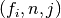, we say it has solved the problem 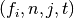 — it was successful. [10]
Now, the runtime is the evaluation count when the target value was
reached or surpassed for the first time.
That is, runtime is the number of -evaluations needed to solve the problem
(but see also Recommendations in [HAN2016ex]). [11]
Measured runtimes are the only way of how we assess the performance of an
algorithm. [12]
If an algorithm does not hit the target in a single run, the runtime remains undefined — while it has been bound to be at least 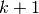, where is the number of evaluations in this unsuccessful run. The number of defined runtime values depends on the budget the algorithm has explored. Therefore, larger budgets are preferable — however they should not come at the expense of abandoning reasonable termination conditions. Instead, restarts should be done.
| [10] | Note the use of the term problem in two meanings: as the problem the
algorithm is benchmarked on, , and as the problem, , an algorithm can
solve by hitting the target with the runtime,  , or may fail to solve.
Each problem gives raise to a collection of dependent problems .
Viewed as random variables, the events given are not
independent events for different values of . , or may fail to solve.
Each problem gives raise to a collection of dependent problems .
Viewed as random variables, the events given are not
independent events for different values of . |
| [11] | Target values are directly linked to a problem, leaving the burden to
properly define the targets with the designer of the benchmark suite.
The alternative is to present final - or indicator-values as results,
leaving the (rather unsurmountable) burden to interpret these values to the
reader.
Fortunately, there is an automatized generic way to generate target values
from observed runtimes, the so-called run-length based target values
[HAN2016perf]. |
| [12] | Observed success rates can (and should) be translated into lower bounds on runtimes on a subset of problems. |
Restarts and Simulated Restarts¶
An optimization algorithm is bound to terminate and, in the single-objective case, return a recommended solution, , for the problem, . It solves thereby all problems for which 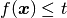. Independent restarts from different, randomized initial solutions are a simple but powerful tool to increase the number of solved problems [HAR1999] — namely by increasing the number of -values, for which the problem was solved. [13] Independent restarts tend to increase the success rate, but they generally do not change the performance assessment, because the successes materialize at greater runtimes. Therefore, we call our approach budget-free. Restarts however “improve the reliability, comparability, precision, and “visibility” of the measured results” [HAN2016ex].
Simulated restarts [HAN2010ex] [HAN2010] [HAN2016perf] are used to determine a runtime for unsuccessful runs. Semantically, this is only valid if we interpret different instances as random repetitions. Resembling the bootstrapping method [EFR1994], when we face an unsolved problem, we draw uniformly at random a new until we find an instance such that was solved. [14] The evaluations done on the first unsolved problem and on all subsequently drawn unsolved problems are added to the runtime on the last problem and are considered as runtime on the original unsolved problem. This method is applied if a problem instance was not solved and is (only) available if at least one problem instance was solved.
| [13] | For a given problem , the number of acquired runtime values,
is monotonously increasing with the budget used. Considered as random
variables, these runtimes are not independent. |
| [14] | More specifically, we consider the problems 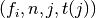 for all benchmarked instances . The targets 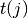 depend on the instance in a way to make the problems comparable [HAN2016perf]. |
Aggregation¶
A typical benchmark suite consists of about 20–100 functions with 5–15 instances for each function. For each instance, up to about 100 targets are considered for the performance assessment. This means we want to consider at least , and up to runtimes for the performance assessment. To make them amenable to the experimenter, we need to summarize these data.
Our idea behind an aggregation is to make a statistical summary over a set or subset of problems of interest over which we assume a uniform distribution. From a practical perspective this means to have no simple way to distinguish between these problems and to select an optimization algorithm accordingly—in which case an aggregation would have no significance—and that we are likely to face each problem with similar probability. We do not aggregate over dimension, because dimension can and should be used for algorithm selection.
We have several ways to aggregate the resulting runtimes.
- Empirical distribution functions (ECDF). In the domain of optimization, ECDF are also known as data profiles [MOR2009]. We prefer the simple ECDF over the more innovative performance profiles [MOR2002] for two reasons. ECDF (i) do not depend on other presented algorithms, that is, they are entirely comparable across different publications, and (ii) let us distinguish in a natural way easy problems from difficult problems for the considered algorithm. [15] We usually display ECDF on the log scale, which makes the area above the curve and the difference area between two curves a meaningful conception [HAN2016perf].
- Averaging, as an estimator of the expected runtime. The average runtime, that is the estimated expected runtime, is often plotted against dimension to indicate scaling with dimension. The arithmetic average is only meaningful if the underlying distribution of the values is similar. Otherwise, the average of log-runtimes, or geometric average, is useful.
- Restarts and simulated restarts, see Section Restarts and Simulated Restarts, do not literally aggregate runtimes (which are literally defined only when was hit). They aggregate, however, time data to eventually supplement missing runtime values, see also [HAN2016perf].
| [15] | When reading a performance profile, an invariable immediate question is often whether a large runtime difference is mainly due to one algorithm solving the problem very quickly. This question cannot be answered from the profile. The advantage (i) over data profiles disappears when using run-length based target values [HAN2016perf]. |
General Code Structure¶
The code basis of the COCO code consists of two parts.
- The experiments part
- defines test suites, allows to conduct experiments, and provides the output
data. The code base is written in C, and wrapped in different languages
(currently Java, Python, Matlab/Octave). An amalgamation technique is used
that outputs two files
coco.handcoco.cwhich suffice to run experiments within the COCO framework. - The post-processing part
- processes the data and displays the resulting runtimes. This part is
entirely written in Python and heavily depends on
matplotlib[HUN2007].
Test Suites¶
Currently, the COCO framework provides three different test suites.
bbob- contains 24 functions in five subgroups [HAN2009fun].
bbob-noisy- contains 30 noisy problems in three subgroups [HAN2009noi], currently only implemented in the old code basis.
bbob-biobj- contains 55 bi-objective () functions in 15 subgroups [TUS2016].
Acknowledgments
The authors would like to thank Raymond Ros, Steffen Finck, Marc Schoenauer, Petr Posik and Dejan Tušar for their many invaluable contributions to this work.
The authors also acknowledge support by the grant ANR-12-MONU-0009 (NumBBO) of the French National Research Agency.
References
| [HAN2016perf] | (1, 2, 3, 4, 5, 6, 7, 8) N. Hansen, A. Auger, D. Brockhoff, D. Tušar, T. Tušar (2016). COCO: Performance Assessment. ArXiv e-prints, arXiv:1605.03560 |
| [HAN2010ex] | N. Hansen, A. Auger, S. Finck, and R. Ros (2010). Real-Parameter Black-Box Optimization Benchmarking 2010: Experimental Setup, Research Report RR-7215, Inria. |
| [HAN2010] | N. Hansen, A. Auger, R. Ros, S. Finck, and P. Posik (2010). Comparing Results of 31 Algorithms from the Black-Box Optimization Benchmarking BBOB-2009. Workshop Proceedings of the GECCO Genetic and Evolutionary Computation Conference 2010, ACM, pp. 1689-1696 |
| [HAN2009fun] | N. Hansen, S. Finck, R. Ros, and A. Auger (2009). Real-parameter black-box optimization benchmarking 2009: Noiseless functions definitions. Research Report RR-6829, Inria, updated February 2010. |
| [HAN2009noi] | N. Hansen, S. Finck, R. Ros, and A. Auger (2009). Real-Parameter Black-Box Optimization Benchmarking 2009: Noisy Functions Definitions. Research Report RR-6869, Inria, updated February 2010. |
| [HAN2016ex] | (1, 2, 3, 4) N. Hansen, T. Tušar, A. Auger, D. Brockhoff, O. Mersmann (2016). COCO: Experimental Procedure, ArXiv e-prints, arXiv:1603.08776. |
| [HUN2007] | J. D. Hunter (2007). Matplotlib: A 2D graphics environment, Computing In Science & Engineering, 9(3): 90-95. |
| [EFR1994] | B. Efron and R. Tibshirani (1994). An introduction to the bootstrap. CRC Press. |
| [HAR1999] | G. R. Harik and F. G. Lobo (1999). A parameter-less genetic algorithm. In Proceedings of the Genetic and Evolutionary Computation Conference (GECCO), volume 1, pages 258-265. ACM. |
| [HOO1998] | H. H. Hoos and T. Stützle (1998). Evaluating Las Vegas algorithms: pitfalls and remedies. In Proceedings of the Fourteenth Conference on Uncertainty in Artificial Intelligence (UAI-98), pages 238-245. |
| [MOR2009] | J. Moré and S. Wild (2009). Benchmarking Derivative-Free Optimization Algorithms. SIAM J. Optimization, 20(1):172-191. |
| [MOR2002] | D. Dolan and J. J. Moré (2002). Benchmarking Optimization Software with Performance Profiles. Mathematical Programming, 91:201-213. |
| [STE1946] | (1, 2) S.S. Stevens (1946). On the theory of scales of measurement. Science 103(2684), pp. 677-680. |
| [TUS2016] | (1, 2) T. Tušar, D. Brockhoff, N. Hansen, A. Auger (2016). COCO: The Bi-objective Black Box Optimization Benchmarking (bbob-biobj) Test Suite, ArXiv e-prints, arXiv:1604.00359. |
| [WHI1996] | (1, 2) D. Whitley, S. Rana, J. Dzubera, K. E. Mathias (1996). Evaluating evolutionary algorithms. Artificial intelligence, 85(1), 245-276. |